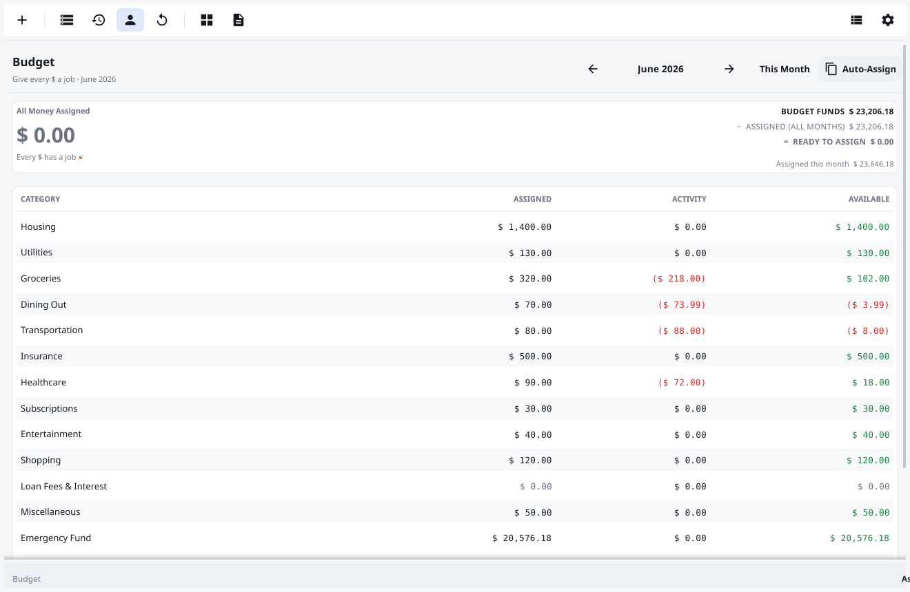
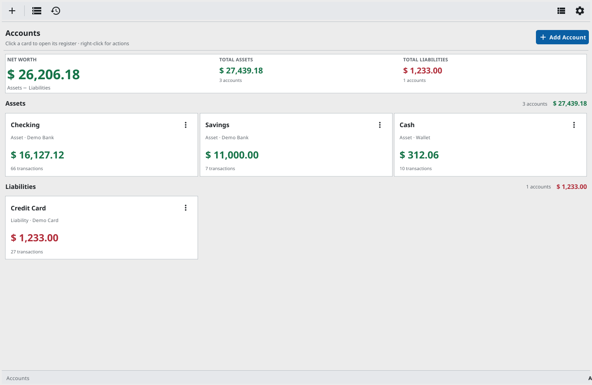
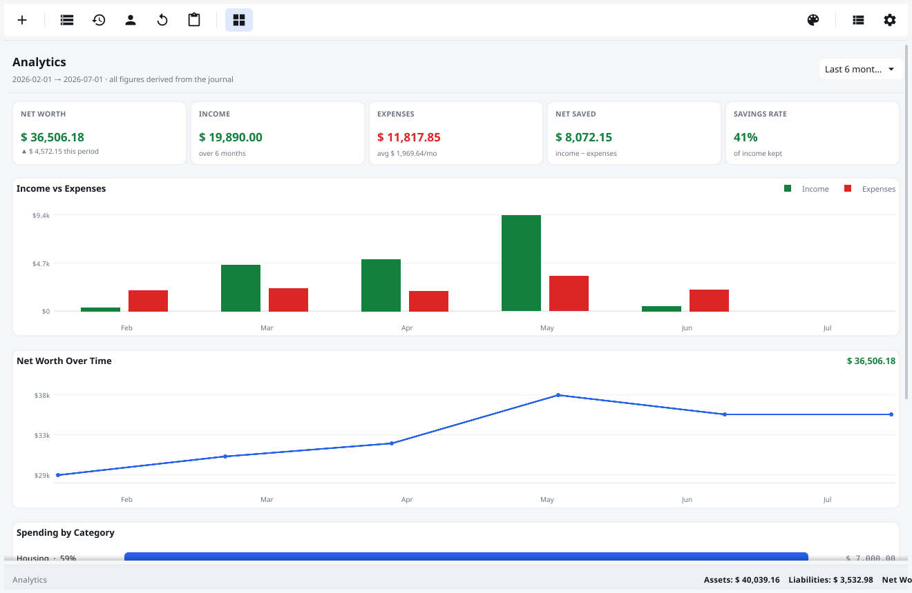
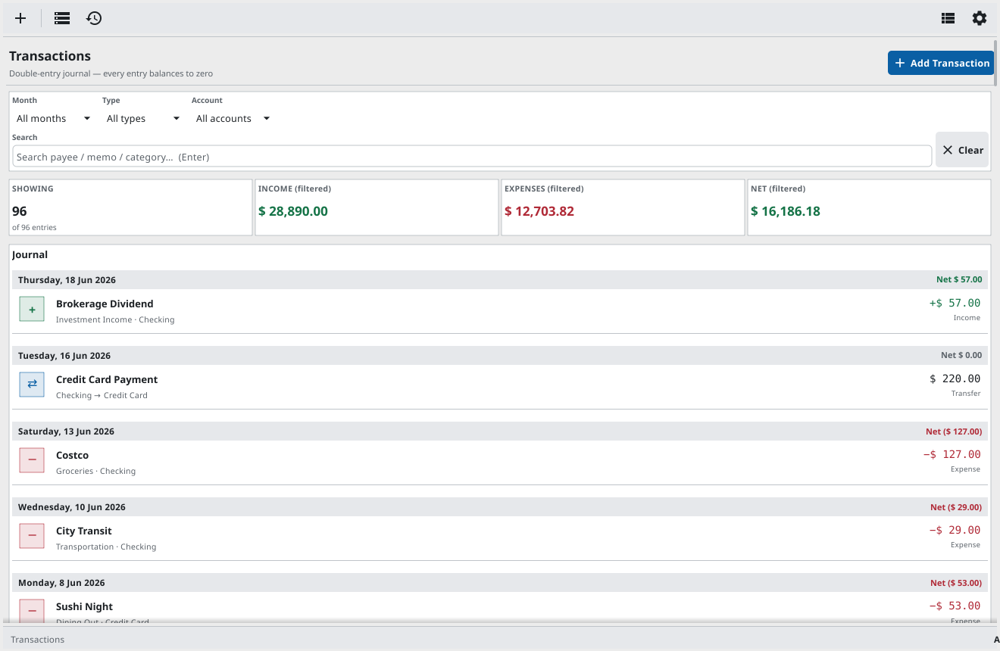
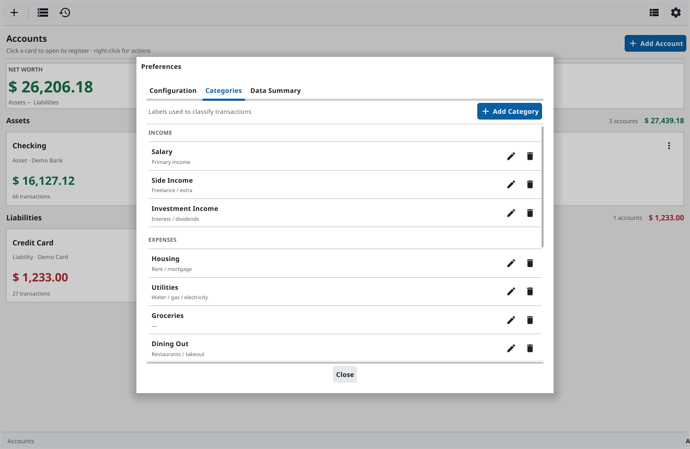
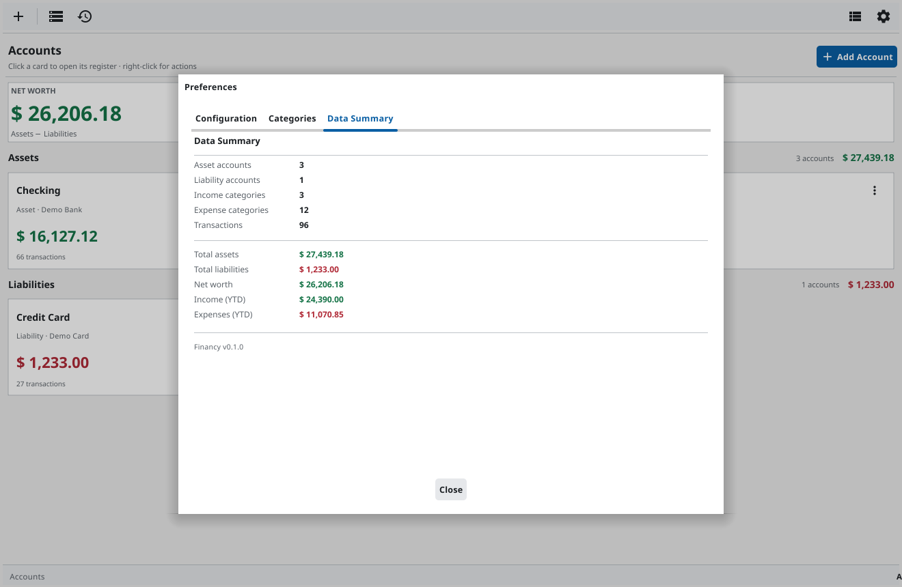
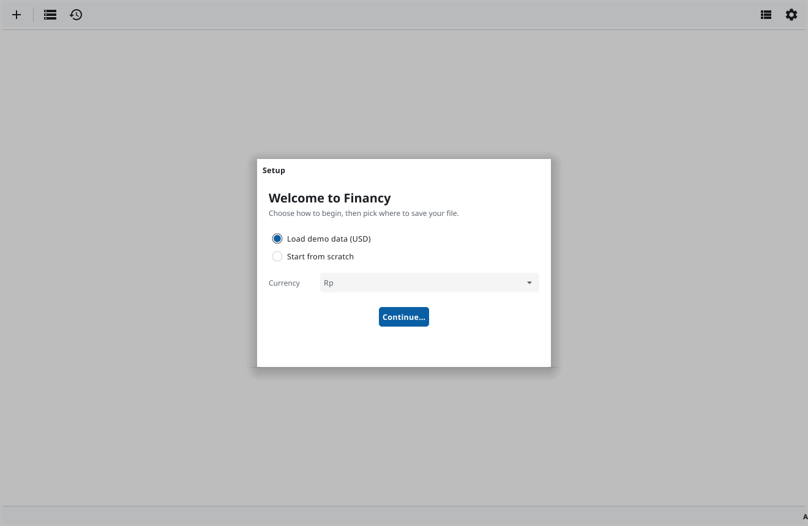

🎯
Zero-based budget
Give every category a job until Ready to Assign hits zero. Track Assigned · Activity · Available per envelope, with balances that roll forward and overspending in red.
Financy is a fast, local-first zero-based budgeting app: assign every unit of money to a category until Ready to Assign hits zero, then track your envelopes through the month. Backed by real double-entry accounting, so your budget and balances can never drift out of balance — and your data lives in a single file you own.
Linux · Windows · macOS — free & open source (MIT)

Give every category a job until Ready to Assign hits zero. Track Assigned · Activity · Available per envelope, with balances that roll forward and overspending in red.
One global pool drawn from your real on-budget balances. Assign to any month — even a future one — and it draws down today. You can't budget money you don't have.
Card spending nets against the budget so it's budget-neutral. Mark investments or a mortgage as off-budget — counted in net worth, not in assignable cash.
Every transaction is balanced postings that sum to zero. Your budget, balances and net worth are derived from one journal — they can't go inconsistent.
KPIs, income-vs-expenses, net-worth trends and spending by category, plus Income Statement, Balance Sheet and Cash Flow — all derived from your journal.
Each document is a single .financy SQLite file, always auto-saved with ACID writes. No cloud, no account, no save button.






Grab the build for your platform from the latest release. Builds are currently unsigned, so Windows/macOS may ask you to confirm before the first run.
Download the .tar.xz, extract, and run the app.
Run the .exe. SmartScreen → More info → Run anyway.
Unzip, move to Applications. First launch: right-click → Open.
Or build from source: git clone the repo and run make run.